GauRast：增强 GPU 三角形光栅器以加速 3D Gaussian Splatting
论文针对 3D Gaussian Splatting（3DGS）在功率受限边缘 GPU 上无法实时渲染的问题：在 10W 功耗限制的 NVIDIA Jetson Orin NX 上仅 2-5 FPS，且 profiling 显示 Gaussian rasterization 阶段占渲染总时间 80% 以上。与以往设计专用加速器的路线不同，作者利用 3DGS 与 GPU 既有三角形光栅化在数据流和访存模式上的相似性，对 GPU 内固定功能 triangle rasterizer 做最小增量增强：每个 PE 仅新增两个加法器、一个乘法器和一个指数单元，复用原有 9 个加法器、9 个乘法器及 Tile Buffer 等存储接口，并以 CUDA-Collaborative 调度让 CUDA core 与光栅器流水并行。原型经 Siemens Catapult HLS 生成 RTL 并在 28nm 完成 P&R，增强部分仅占 SoC 面积 0.2%；光栅化算子提速 23×、能效提升 24×，端到端分别提速 6×/4×，达到 24/46 FPS。该工作属 GPU 图形硬件加速范畴，与本团队内存/互连 IP 职责无直接关联。
3DGS 渲染计算量大，在功耗受限（≤10W）的边缘 GPU SoC（如 NVIDIA Jetson Orin NX）上仅能实现 2-5 FPS，无法满足实时渲染需求；而已有 3DGS/NeRF 加速工作依赖专用硬件加速器，需要独占硬件资源，带来存储系统与软件栈复杂度、集成开销和硬件成本上升，在面积与功耗严格受限的边缘平台未必可行。
先对 3DGS 渲染流水线做 profiling 定位瓶颈（Gaussian rasterization 占 >80% 运行时间），再对比 Gaussian 光栅化与三角形光栅化的异同（覆盖判定函数与归约算法不同，但 I/O 位宽与访存模式相同），据此增强 GPU GPC 内既有 triangle rasterizer：在每个 PE 中加入可重构数据通路，仅新增 Gaussian 专用逻辑（两个加法器、一个乘法器、一个指数单元，配多路选择器与输入门控省功耗），复用原有 9 个加法器、9 个乘法器及 Tile Buffer、Controller 等存储接口；调度上采用 CUDA-Collaborative 流水线，CUDA core 负责 preprocessing/sorting，增强光栅器负责主导光栅化。原型用 C++ 经 Siemens Catapult 生成 RTL，Synopsys Fusion Compiler 在 28nm（0.9V、1GHz）完成综合与 P&R，FP32 精度，并开发 cycle-accurate simulator 评估按基线 SoC 面积扩展到 300 PE 的设计。
Gaussian rasterization 算子：原始 3DGS 算法平均提速 23×、能效提升 24×；效率优化版算法提速 20×、能效提升 22×
端到端：原始 3DGS 提速 6×（平均 24 FPS），效率优化版提速 4×（平均 46 FPS）
硬件开销：增强部分约占基线 Jetson Orin NX SoC 总面积的 0.2%；16-PE 原型典型功耗 1.7W（28nm、0.9V、1GHz、FP32）
对比 SOTA 专用加速器 GSCore：FP16 重实现下性能相当，面积仅 0.16 mm²（GSCore 为 3.95 mm²），面积效率提升 24.7×
在 Apple M2 Pro GPU + OpenSplat 上验证跨 GPU 兼容性，bicycle 场景光栅化提速 11.2×
RTL 实现的 triangle 与 Gaussian 光栅化输出与软件实现完全一致，无渲染质量损失
与以往为 3DGS/NeRF 设计专用加速器（如 GSCore）不同，本文不新增独立加速器，而是增强 GPU 中已有的固定功能 triangle rasterizer，以极小面积开销（0.2% SoC）同时支持三角形与 Gaussian 两种光栅化，保持与既有 GPU 架构、传统渲染流程和编程接口的兼容，并复用既有存储接口与数据通路，避免了专用加速器所需的独立存储系统与软件栈设计。
相关度级别：low
命中能力域：无明显对应
理由：论文核心贡献是 GPU 图形光栅器的微架构增强与 3DGS 渲染加速，属于处理器/图形硬件范畴，与本团队 LPDDR/HBM/UCIe 等内存与互连 IP 的架构定义、RTL 实现与验证交付职责无实质交集。论文虽包含 RTL 生成、28nm 综合与 P&R、功耗分析等环节，但均为标准流程（Catapult HLS、Fusion Compiler、PrimePower），并非论文的方法学贡献，也未触及团队关注的时序收敛、低功耗设计、CDC/RDC、UVM/formal 验证、仿真加速或 EDA 自动化等能力域议题，故判定 low 且无对应能力域。
建议动作：仅了解结论
arXiv:2503.16681v2 [cs.GR] 2025年4月10日
Sixu Li 1,2，Ben Keller 2，Yingyan (Celine) Lin 1 和 Brucek Khailany 3
1 佐治亚理工学院计算机科学学院，美国佐治亚州亚特兰大
2 NVIDIA，美国加利福尼亚州圣克拉拉
3 NVIDIA，美国德克萨斯州奥斯汀
{ sli941, celine.lin } @gatech.edu, { benk, bkhailany } @nvidia.com
摘要——3D智能利用丰富的3D特征，是人工智能（AI）中一个前景广阔的前沿方向，而3D渲染是众多下游应用的基础。3D高斯泼溅（3D Gaussian Splatting, 3DGS）是一种新兴的高质量3D渲染方法，其计算量巨大，使得在现有配备图形处理器（GPU）的边缘设备上实时执行变得不可行。以往加速3DGS的工作依赖于专用加速器，需要巨大的集成开销和硬件成本。本工作提出了一种加速策略，利用3DGS流水线与现代GPU中高度优化的传统图形流水线之间的相似性。我们并未开发专用加速器，而是增强现有的GPU光栅化器硬件，以高效支持3DGS操作。我们的结果表明，对于3DGS流水线中占主导地位的光栅化算子，处理速度提升了23倍，能耗降低了24倍。这些改进使原始3DGS算法和最新的效率改进型流水线的端到端运行时间分别加快了6倍和4倍，实现了24 FPS和46 FPS的渲染速度。这些增强仅带来相对于整个片上系统（SoC）芯片面积0.2%的极小面积开销，凸显了我们的方法在资源受限平台上实现3DGS渲染的实用性与高效性。
索引术语——架构与系统设计、图形处理器、3D高斯泼溅、神经渲染
3D intelligence is set to become the next major frontier in AI by leveraging rich 3D features to enhance understanding and interaction within complex environments. As Prof. FeiFei Li, co-founder of ImageNet, emphasized, '...we need spatially intelligent AI that can model the world and reason about objects, places, and interactions in 3D space and time... ' [40]. This underscores the importance of 3D intelligent applications such as autonomous driving [41], robotics [34], and augmented/virtual reality (AR/VR) [5] shown in Fig. 1. A foundational task within 3D intelligence is 3D scene rendering, which provides essential features for downstream AI tasks that require spatial information.
Recently, 3D Gaussian Splatting (3DGS) [15] has emerged as the leading method for 3D scene rendering. As summarized in Table I, unlike previous techniques like triangle meshes [35] and neural radiance fields (NeRF) [21], 3DGS maps 3D scenes onto a set of Gaussian balls, offering superior rendering quality and automated scene reconstruction. Thanks to these advantages, 3DGS has been rapidly adopted in various 3D
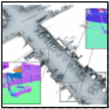
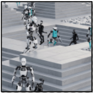
Autonomous Driving Robotics
| Triangle Mesh [35] | NeRF [21] | 3D Gaussian [15] | |
|---|---|---|---|
| Scene Reconstruction | Manual | Automatic | Automatic |
| Rendering Quality | Manually Decided | High | Very High |
| Rendering Speed on GPU [23] | Fast | Slow | Medium |
| | Triangle Mesh [35] | NeRF [21] | 3D Gaussian [15] |
applications, including autonomous driving [14], [32], [44], robotics [1], [13], [20], and AR/VR [19], [33], [42].
Despite its robust performance on high-powered ( ≥ 200 W) GPUs [26], achieving real-time rendering of ≥ 30 frames per second (FPS), 3D Gaussian Splatting cannot achieve high framerates on edge computing platforms with GPUs, such as those with power limitations ( ≤ 10 W) like the NVIDIA Jetson Orin NX [23]. These platforms are increasingly crucial due to the growing demand for 3D processing in mobile and embedded systems [12], [28]. Specifically, 3DGS achieves only 2-5 FPS on these platforms [23] with commonly used realworld, large-scale datasets [4], falling short of the performance requirement for most practical applications. This performance gap poses challenges for deploying advanced 3D intelligence in resource-constrained environments, highlighting the need for hardware acceleration of 3DGS.
Existing efforts to accelerate 3D Gaussian Splatting [17] and similar rendering pipelines [11], [18] typically focus on developing dedicated hardware accelerators. While these specialized units can provide performance benefits, they require exclusive hardware resources and often lead to increased system complexity and cost. Moreover, the integration of dedicated accelerators may not be feasible for all edge platforms, especially those with stringent area and power constraints. However, it is noteworthy that modern GPUs are already equipped with optimized fixed-function graphic acceleration hardware for triangle meshes. As these fixed-function units also target graphics rendering, their inherent capabilities present an opportunity to leverage existing resources to accelerate 3DGS rendering without introducing significant additional overhead.
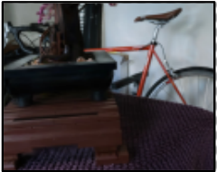
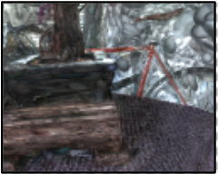
为缓解为专用加速器设计专用存储系统与软件栈所带来的挑战 [7]，我们提出了一种替代方案：增强 GPU 中现有的图形单元——特别是用于三角形网格的光栅化器——以加速 3DGS 渲染。通过利用当前 GPU 硬件中这些现有固定功能单元的能力，我们力求在无需额外专用加速器的情况下提升性能。我们首先对 3DGS 渲染流水线进行深入剖析，以识别其中耗时的操作，并分析其与三角形网格渲染流水线中各算子的相似之处，而这些算子已由 GPU 原生图形硬件单元提供支持。这一分析揭示了改造并增强这些单元以高效处理 3D 高斯运算的机会。
基于这些见解，我们提出并开发了一种面向 GPU 的增强型光栅化器 GauRast，使其能够高效执行 3DGS 渲染流水线中的主导算子，同时保留标准三角形网格渲染的原有能力。该设计确保了与现有 GPU 架构的兼容性，并将对传统工作流程的干扰降至最低。通过增强现有硬件而非引入全新的组件，我们的方法在性能提升与资源开销之间取得了平衡。我们的贡献如下：
综上所述，我们的各项方案展示了一种有前景的途径，能够在未来的边缘设备上实现实时 3DGS 渲染。
3D Gaussian Scene Representation. The state-of-theart (SOTA) method for 3D scene rendering employs a 3D Gaussian-based representation [15] as illustrated in Fig. 2. This approach strikes a balance between high rendering quality and efficient rendering speed, especially on standard desktoplevel GPUs. In this representation, objects are modeled as collections of elliptical 3D Gaussian balls. Each Gaussian ball is characterized by a 3D Gaussian probability density function and an associated color vector. The rendering process distributes colors over the regions covered by the Gaussians' probability densities, collectively forming the complete scene. Rendering an image from a specific viewpoint using this representation (described in Fig. 3) involves three main steps:
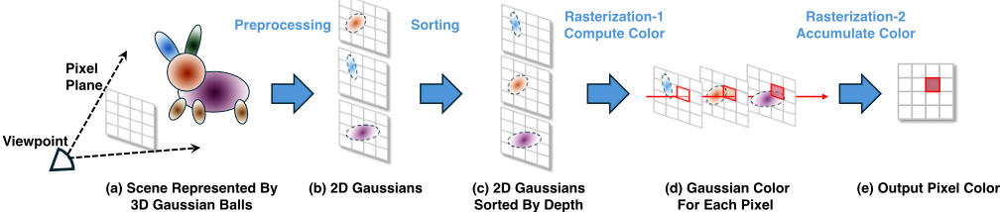
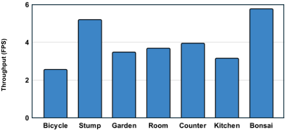
Step 1: Preprocessing. The first stage of 3DGS rendering, depicted in Fig. 3(a), is preprocessing, which serves three purposes: projecting all 3D Gaussians onto a 2D plane according to the specified viewing position and angle, converting the color vector of each Gaussian to an RGB representation based on the viewing parameters, and computing the depth of each 3D Gaussian relative to the given viewpoint. This step transforms the 3D representation into a set of 2D Gaussians, each characterized by an opacity function o , an assigned RGB color c , a depth value d , a covariance matrix Σ representing the 2D Gaussian probability distribution, and a center point µ .
Step 2: Sorting. The second stage, as illustrated in Fig. 3(b), involves sorting the projected 2D Gaussians. Due to the potential overlap of Gaussians, each pixel may be influenced by multiple Gaussians. The rendering order impacts their visibility since Gaussians rendered earlier can obscure those rendered later. To maintain correct occlusion relationships and ensure visual consistency, the 2D Gaussians are sorted by their depth values. This depth-based sorting ensures that Gaussians nearer to the viewing position are rendered first, preserving proper occlusion handling. Step 3: Gaussian Rasterization. The final step, Gaussian rasterization, applies the color of each Gaussian to the pixels it covers, based on opacity and Gaussian probability, and follows the depth order determined in Step 2. As shown in Fig. 3(c), for each Gaussian applied to a specific pixel, the density α P,i is computed using the formula:
where P represents the pixel coordinate, i is the index of the Gaussian, and o i is the opacity of the Gaussian. This density reflects the contribution of the Gaussian to the pixel. Once the density α P,i is calculated, the RGB color contribution for that pixel is accumulated as follows, as shown in Fig. 3(d):
项 T P,i = ∏ i - 1 j =1 (1 - α P,j ) 表示该像素处所有先前已应用高斯的累积密度，用于计入先前高斯所产生的遮挡效应。这确保了在图 3(e) 中，只有相互重叠高斯的可见部分才会对最终渲染颜色做出贡献。
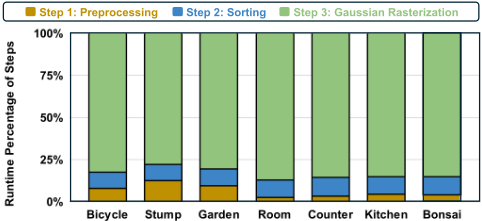
为了确定在边缘 SoC 上渲染 3D 高斯时的瓶颈，我们进行了详细的性能剖析，以分析各渲染步骤的运行时间分布。剖析在广泛使用的 3D 渲染数据集 NeRF-360 [4] 上进行，该数据集包含七个真实世界的多物体场景。不同渲染步骤的内核（kernel）运行时间是在 NVIDIA Jetson Orin NX [23] 上使用 NVIDIA Nsight Systems [29] 测量的，该平台在边缘设备典型的 10W 功耗限制下运行 [9], [43]。每个场景渲染所有视点的平均运行时间汇总于图 4。结果表明，该边缘 SoC 仅能达到 2-5 FPS，因此需要显著的加速才能用于实际应用。各渲染步骤的详细运行时间分解如图 5 所示。步骤 3，即高斯光栅化阶段，在总体运行时间中占主导地位，在所有场景中占总渲染时间的 80% 以上，因此构成了主要的性能瓶颈。
3DGS 渲染管线中占主导地位的高斯光栅化所带来的计算需求，已经推动了多种加速工作 [17]。当前的研究主要侧重于为 3DGS [17] 和 NeRF [11], [18] 等新兴 3D 渲染管线开发专用硬件加速器。尽管这些加速器能够带来性能提升，但它们也可能引入显著的权衡，包括存储器系统和软件栈复杂度的增加 [7]，以及对独占硬件资源的需求。与这些专用方法不同，我们的策略侧重于增强现有的 GPU 硬件，以利用现代 GPU 的内建能力。这种方法在提升 3DGS 性能的同时，保持与传统 GPU 操作和原始编程接口的兼容性，最大限度地减少对既有工作流程的干扰，并充分利用 GPU 现有的数据通路。现代 GPU 拥有针对三角形网格光栅化进行优化的专用单元 [24]。该过程涉及遍历图元（此处指三角形）并将其参数映射到显示像素。该管线高度并行化，依靠固定功能加速器实现快速计算 [2], [6], [39]。我们的方法首先研究高斯光栅化与三角形光栅化之间的异同，后者正是这些经过优化的 GPU 硬件单元所高效支持的。
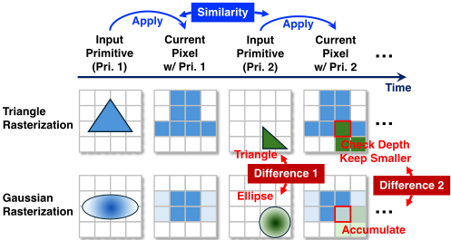
基于我们对高斯光栅化与三角形光栅化之间异同点的分析，我们提出对现有三角形光栅化器进行增强以支持三维高斯泼溅（3DGS）。表 II 总结了三角形光栅化与高斯光栅化在资源需求方面的对比。如表所示，两种光栅化过程具有相同的输入和输出参数规模，并遵循相似的流程：先初始化像素存储，再将图元应用到每个像素。由于二者共享相同的 I/O 宽度和访问模式，现有三角形光栅化器的存储器接口可以直接复用。
| Subtask (Operator) | Triangle Rasterization [35] | Gaussian Rasterization [15] |
|---|---|---|
| Input | Vertices' Coordinates (9 FP Numbers) | Σ , o , µ , c (9 FP Numbers) |
| 1 | Coordinate Shift (ADD, MUL) | Coordinate Shift (ADD, MUL) |
| 2 | Intersection Detection (ADD, MUL, DIV) | Gaussian Probability Computation (ADD, MUL, EXP) |
| 3 | UV Weight Computation (ADD, MUL) | Color Weight Computation (ADD, MUL) |
| 4 | Min-Depth Color Hold (ADD, MUL) | Color Accumulation (ADD, MUL) |
| Output | UV Weight, Depth (3 FP Numbers) | Accumulated Color (3 FP Numbers) |
| Subtask (Operator) | Triangle Rasterization [35] | Gaussian Rasterization [15] |
在计算资源方面，如表 II 所强调的，两种过程的核心任务主要都需要乘法器和加法器。这一相似性使我们能够引入一种可重构数据通路，利用相同的硬件资源同时支持三角形图元和高斯图元。然而，每种图元类型都有其特定的资源需求：三角形光栅化需要除法器，而高斯光栅化则需要指数运算单元。为满足这些专门需求，我们提出为这些不同的运算添加专用硬件单元，从而实现对两种光栅化的无缝支持。
基于第 III-C 节的分析，我们提出了 GauRast 的硬件设计。GauRast 是一种增强型光栅化器，通过扩展现有硬件能力来高效支持三维高斯泼溅（3DGS）。与以往依赖专用加速器的方法不同，GauRast 利用 GPU 内置的光栅化硬件，特别是三角形光栅化器，来执行 3DGS 渲染任务。这一方法确保了与现有 GPU 工作流程的无缝集成，在保持与传统渲染兼容性的同时仅引入极小的开销。
如图 7(a) 左侧所示，GauRast 硬件构建于现代 GPU 架构的图形处理集群（GPC）之上 [25], [27]。每个 GPC 包含多个用于通用计算的流式多处理器（SM）以及用于图形处理的专用固定功能单元。在该架构中，我们实现了一个能够同时处理三角形光栅化和高斯光栅化的增强型光栅化器，扩展了原本仅支持三角形光栅化的原始光栅化器的功能。如图 7(a) 所示，我们的修改仅限于 GPC 内部的光栅化器，SM 保持不变，从而保留了 GPU 的整体结构。该增强型光栅化器针对高斯泼溅处理进行了优化，如图 7(c) 所示，在每个处理元件（PE）内部的现有硬件旁加入了新的逻辑路径，从而实现了传统三角形渲染与高斯光栅化之间的无缝切换。
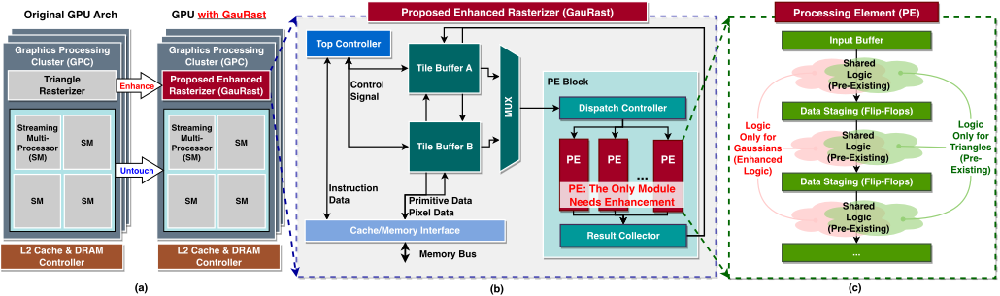
The enhanced rasterizer consists of several key components, as shown in Fig. 7(b):
Tile Buffers (A and B). These ping-pong buffers store primitives (either Gaussians or triangles) and pixel data, enabling efficient data management during the rendering process. By alternating between Tile Buffer A and Tile Buffer B, GauRast minimizes memory latency and allows concurrent data access for both Gaussian and triangle primitives.
PE Block. The core computation of the rasterization process is handled by the PE Block, which contains multiple PEs. Each PE is tasked with computations required for either Gaussian or triangle primitives. The PE Block operates with a high degree of parallelism, leveraging the intrinsic parallel structure of the rendering task for acceleration.
Processing Element (PE). Each PE supports both Gaussian and triangle rasterization and is equipped with a combination of shared and dedicated logic units, as shown in Fig. 7(c). The shared logic handles common operations, while dedicated logic paths manage primitive-specific computations, such as evaluating Gaussian probability distributions for 3DGS rendering and performing depth division for triangle meshes. Importantly, the existing triangle rasterizer includes both shared and triangle-specific logic; thus, only Gaussian-specific logic is added. Compared to a standard triangle rasterizer, our design requires minimal additional hardware in each PE: two adders, one multiplier, and one exponentiation unit for Gaussian support, while reusing nine adders and nine multipliers from the triangle rasterizer. Multiplexers were employed to select the input for the hardware units based on the running mode. To save power, input gating is adopted when the modes do not match. The PE is the only module requiring additional logic to facilitate 3DGS rendering.
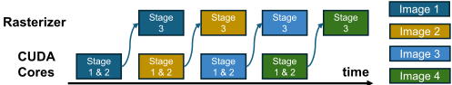
The GauRast hardware optimizes performance and resource utilization by reusing existing memory interfaces, such as Tile Buffers and Controllers, and incorporates minimal additional logic for 3DGS tasks. This design ensures that the enhanced rasterizer remains compatible with the existing triangle rendering pipeline, thus minimizing hardware complexity.
在三角形网格光栅化中，CUDA 核心与硬件光栅化器协作完成渲染过程。具体而言，三维到二维投影和颜色查询等非主导任务由 CUDA 核心处理，而光栅化则由硬件光栅化器管理 [24]。类似地，我们采用混合调度策略来提升效率，将预处理和排序等非主导操作分配给 CUDA 核心，而增强型光栅化器则处理主导性的光栅化工作负载——这是 3DGS 渲染中的主要瓶颈。具体来说，在 3DGS 的三级流水线中，CUDA 核心先处理一幅图像的阶段 1-2，然后将其传递给 GauRast 执行阶段 3，此后 CUDA 核心无需等待即可开始处理下一幅图像的阶段 1-2，如图 8 所示。
数据集与基线。为评估我们提出的 GauRast 所带来的处理加速与效率提升，我们使用被广泛采用的 NeRF-360 数据集 [4]——一个大规模的真实世界数据集——分别基于原始 3DGS 算法 [15] 及其最新的效率优化变体 [10] 开展了实验。在基线方面，我们同时考虑了作为代表性边缘 GPU 的 NVIDIA Jetson Orin NX 片上系统（SoC）[23]，以及此前唯一已发表的 3DGS 加速器方案 GScore [17]。
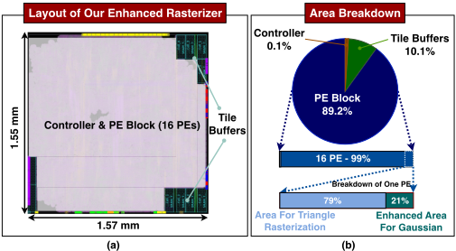
硬件实现。我们使用 C++ 实现了具有 16 个处理单元（PE）的增强型光栅化器原型，并使用 Siemens Catapult [36] 将该设计综合为寄存器传输级（RTL）。随后，遵循 [16] 中描述的方法，我们使用 Synopsys Fusion Compiler [38] 对该 RTL 进行了综合、布局与布线，目标为 28 nm CMOS 工艺节点（典型工艺角，0.9 V，1 GHz 时钟）。该实现中所有计算均采用 FP32 精度，并借助 Siemens 的浮点 IP [36] 来保持与软件实现的结果一致性。图 9 展示了原型的版图与面积分解。基于版图后网表以及使用从目标数据集中随机采样的测试图像所得到的 RTL 仿真活动，Synopsys PrimePower [37] 报告的原型典型功耗为 1.7 W。为确保实现正确，我们对照软件实现验证了三角形光栅化与高斯光栅化的功能准确性，确认 RTL 实现对三角形光栅化 [8] 和 3DGS 渲染 [15] 的渲染输出均完全一致，渲染质量没有任何损失。
仿真器设置。为匹配基线 SoC [23] 中三角形光栅化器单元的有效面积，我们将 GauRast 设计扩展为包含 15 个 16-PE 光栅化器模块实例，共计 300 个 PE。由此，硬件中增强部分约占基线 Jetson Orin NX SoC [23] 总面积的 0.2%。我们还进一步开发了一个周期精确仿真器，用于对该扩展后的设计进行快速评估。该仿真器输出的运行时间与功耗结果已与上述 RTL 仿真结果进行了对比验证，以确保准确性与可靠性。
图 10 和表 III 展示了 GauRast 在高斯光栅化中相对于 CUDA 实现所取得的加速与效率提升，覆盖基准数据集中的所有场景，并同时针对原始算法 [15] 及其最新的效率优化版本 [10]。结果表明，对于原始算法，我们增强的光栅化器实现了平均 23 × 的运行时间降低和平均 24 × 的能效提升。对于效率优化后的算法，其实现了 20 × 的运行时间降低和 22 × 的能效提升。此外，如图 11 所示，用我们提出的增强光栅化器替代基于 CUDA 的光栅化，可带来显著的端到端性能提升。GauRast 使原始 3D Gaussian Splatting 算法的运行时间降低了 6 ×，使优化后的算法降低了 4 ×，分别获得 24 FPS 和 46 FPS 的平均帧率。
| Scene | Bicycle | Stump | Garden | Room | Counter | Kitchen | Bonsai |
|---|---|---|---|---|---|---|---|
| Baseline [23] | 321 ms | 149 ms | 232 ms | 236 ms | 216 ms | 269 ms | 147 ms |
| GauRast | 15 ms | 6.0 ms | 9.6 ms | 10.5 ms | 9.8 ms | 12.2 ms | 5.5 ms |
| Scene | Bicycle | Stump | Garden | Room | Counter | Kitchen | Bonsai |
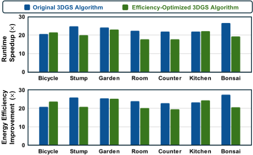
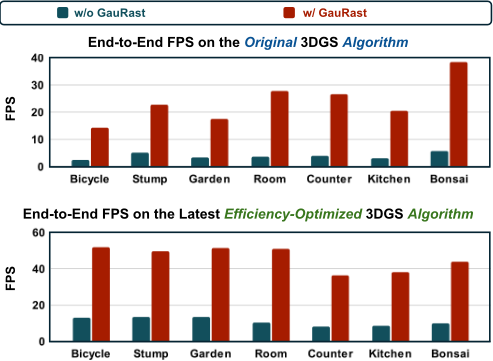
SOTA work GSCore [17] on 3DGS rendering acceleration achieved a 20 × speedup on an edge SoC [30] for Gaussian rasterization, utilizing a dedicated area of 3 . 95 mm 2 with FP16 precision. If we re-implement GauRast to perform FP16 operations, our design achieves equivalent performance to GSCore but requires only 0 . 16 mm 2 area, achieving a 24.7 × improvement in area efficiency. This efficiency gain is attributed to the reuse of existing resources built in the triangle rasterizer. These results highlight the effectiveness of our enhancement approach in efficiently leveraging existing GPU components.
GauRast 与任何配备三角形光栅化器的 GPU 兼容，包括但不限于 NVIDIA 的 GPU。为进一步评估其通用性，我们使用 Apple M2 Pro GPU [3] 搭配 OpenSplat [31] 开展了一项实验。M2 Pro 提供的 FP32 计算能力是基线 NVIDIA Orin NX GPU [23] 的 2.6 倍。我们的结果表明，GauRast 在 bicycle 场景的光栅化中实现了 11.2 倍的加速，证实了其在不同 GPU 架构间的兼容性。
本文提出了 GauRast，一种对现有 GPU 光栅化器的增强设计，旨在加速 3DGS 渲染。实验结果表明，在 NVIDIA Jetson Orin NX 上，我们增强的光栅化器为原始 3DGS 带来了 6 倍的端到端运行时间加速，为最新的效率优化管线带来了 4 倍加速，而面积开销仅为 0.2%，展示了一条在边缘设备上实现实时 3DGS 渲染的有前景的路径。